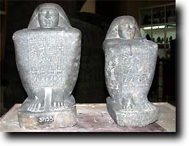
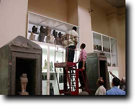
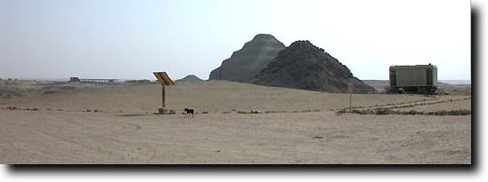

|
|||
Monday 9-Tuesday 10 SeptemberNigel Strudwick sets out for Egypt, arriving in Cairo early in the morning of the 10th. As usual I am staying with our great friend Aly Omar; this year he has stopped being Dean of his faculty, and is less busy and has more time. After getting up the next morning, my first task is to do the paperwork relating to our permission to work, as without this we can do nothing. Thus we go to the offices of the Supreme Council of Antiquities (SCA) at Abbassiya, a north-eastern suburb of Cairo, and sign our contract and obtain our letter to take to Luxor. This year a number of new regulations have been introduced for foreign archaeological missions, but these do not cause any problems for me and--thanks to the SCA--I am through quite quickly. I am not planning on starting work before Monday 16th as you'll see below, but I wanted to allow more time in Cairo in case there were any problems--but there weren't. Afterwards I dropped in on colleagues in the Cairo Museum and arranged to work there the next day. The Cairo Museum is being cleaned up in preparation for its centenary in December, as in the photo. There is to be a special centenary exhibition of new discoveries and little-known objects, including possibly two from TT99 which have been taken to Cairo for this purpose--a Ptah-Sokar-Osiris statue and the statue of Amenhotep. |
|||
|
 | ||
|  |
It is really nice to get to see these two statues and to check their decoration and inscriptions. The photos show just how similar they are to each other; Wedjahor's statue is the larger and his inscriptions are slightly better cut. At the left you can see Wedjahor's statue being placed back in the display case. I am very grateful to Sabah and her colleagues for doing this for me. |
||
Thursday 12-Saturday 14 SeptemberThursday I spend the morning in Cairo doing various errands, and I also visit Rawya Ismail in the Egypt Exploration Society's office. Rawya we have known for many years, and since she has worked for the EES she has helped us a great deal by communicating with the SCA in Abbassiya on our behalf. In the evening Aly takes me to a wonderful wedding at the Nile Hilton, and we get home very late. Friday I spend the morning with Aly and then he takes me into Cairo, where I meet with Ian Shaw and Reem el-Khodary. Reem has had her PhD exam the day before and Ian is over here for the exam as her supervisor at the University of Liverpool. She passed her exam of course; today she is taking me and Ian to Saqqara. There we visit the various British teams working at Saqqara and Memphis, and go for a brief stroll in the area of the pyramid of Teti.  On Saturday I go back to the Cairo Museum, and spend several hours wandering around the galleries, looking at all sorts of things. I also meet with some colleagues, and one of the things I am shown is the statue which was recently recovered from Holland having been stolen from Egypt 15 years ago (see News and Gossip for 24 April 2002). My journey home is fraught; first one minibus collided with a woman crossing the road, and the second one broke down... Late in the evening I go to the airport for the flight to Luxor. I arrive at the Etap hotel about 01:15! |
|||
|
All text and images © Nigel Strudwick 2002
|
|||
 The Dig Diary 2002--Part 1
The Dig Diary 2002--Part 1© Nigel Strudwick 1997-2016